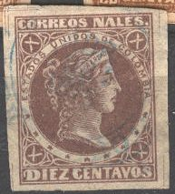
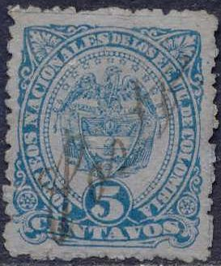
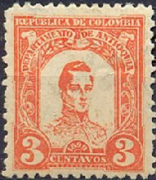
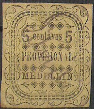
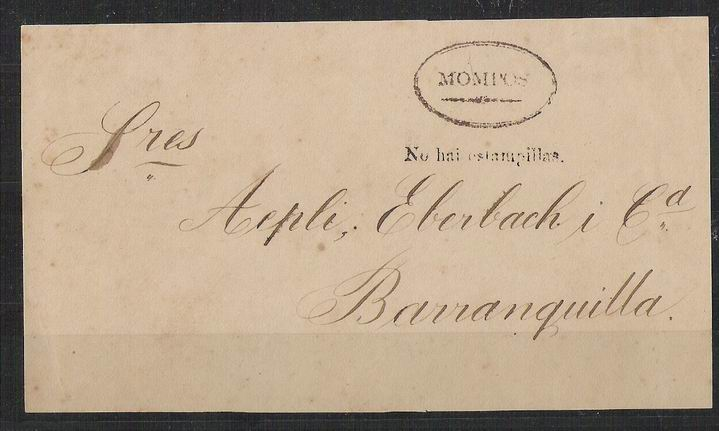

Colombie - Kolumbien
Return To Catalogue - 1859-1863 - 1864-1869 - 1870-1889 - 1890-1902 - 1902 onwards - Postal stationery and insured letter stamps - Miscellaneous - Michelsen (stamp forger)
Antioquia - Bolivar - Boyaca, Cauca - Carthagena - Cucuta - Cundinamarca - Panama - Tolima - Santander
Note: on my website many of the
pictures can not be seen! They are of course present in the
catalogue;
contact me if you want to purchase it.
Examples of this period:
Examples of this period:


Examples of this period:


Columbia consisted of: Antioquia, Bolivar, Boyaca, Cauca, Cundinamarca (Colombia), Magdalena, Tolima, Santander. Every province, except Magdalena issued its own stamps.


Stamp from Carthagena, inscription
'REPUBLICA DE COLOMBIA'


(Stamp of Panama with inscription 'COLOMBIA')
Till 1903 Panama was a part of Colombia.
In some cities stamps were temporally unavailable and the text 'No hai estampillas.' (no stamps available) was printed on either small pieces of paper or on the letters themselves. Examples of such a letter of the city of Mompos:

(Forged cancels by Fournier)
The above cancels are taken from a Fournier Album of Philatelic Forgeries. I don't know on which forged stamps these cancels were applied.
Sellos - Stamps - Timbres-Poste - Briefmarken

{kind=link}
{kind=link}